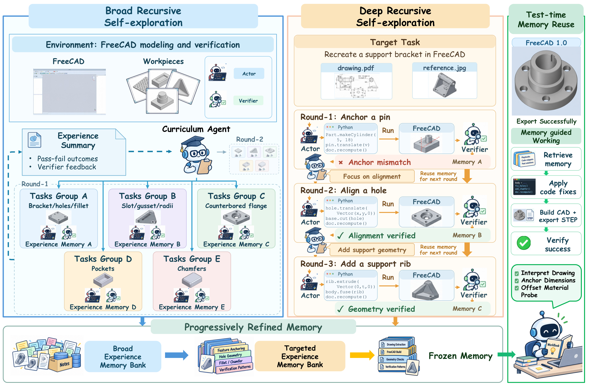
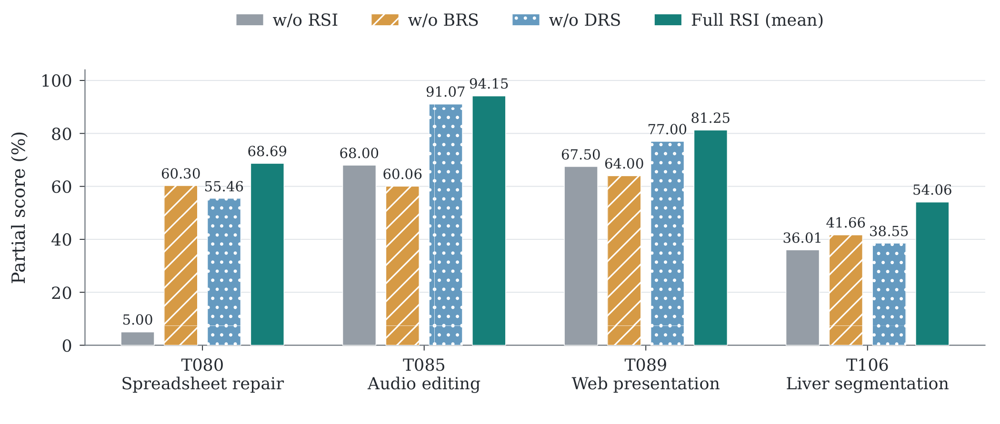
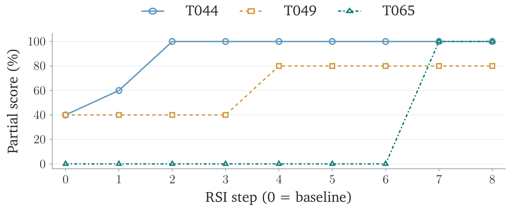
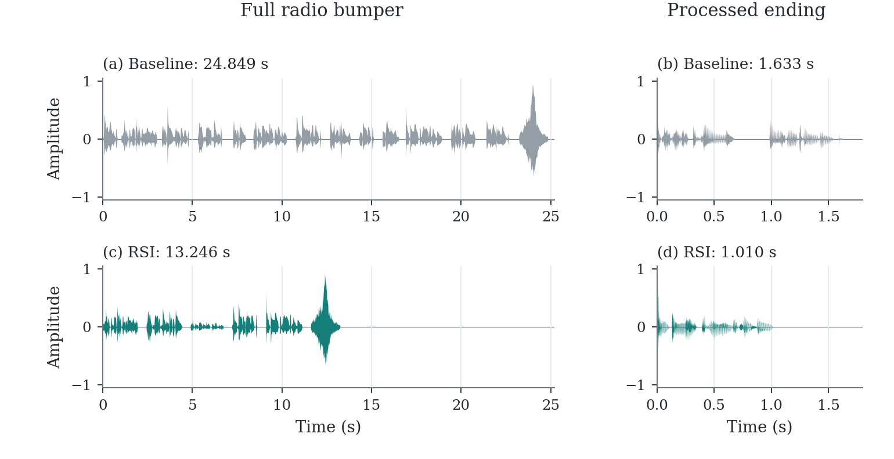
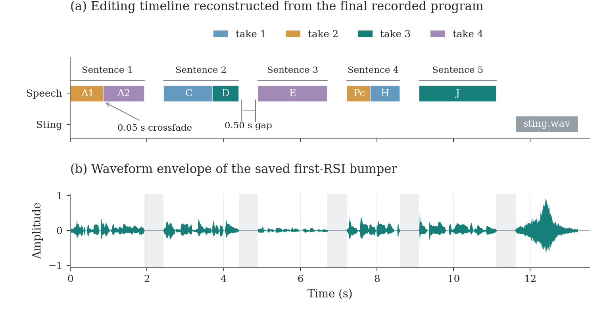

Broad Recursive
Self-exploration
Explore complementary directions in parallel. Acquire practical knowledge of the environment, tools, and procedures that may matter for the task.
Alwaysbecoming.
Aether AI / Recursive self-improvement
Autonomous Exploration for Recursive Self-improvement in New Environments
Causality-driven RSI Agent v1
01 / The idea
Unfamiliar software comes with its own interfaces, conventions, and failure modes. An agent can repair a mistake during one attempt and still have to discover the same lesson again in the next.
RSIAgent turns these interactions into persistent experience. It explores, checks outcomes, and consolidates useful procedures into memory that subsequent attempts can reuse—without updating model weights.
Experience is consolidated into memory and informs the next exploration.
Explore complementary directions in parallel. Acquire practical knowledge of the environment, tools, and procedures that may matter for the task.
Build on that experience through sequential attempts and feedback-guided practice. Revisit hard cases, hidden constraints, and boundary conditions.
Freeze the accumulated memory and reuse it for task execution after an environment reset. The model weights and agent harness remain unchanged.

The actor agent uses executable programs to interact with software, inspect artifacts, and revise actions from execution feedback. Retained procedures can therefore be inspected and reused as code.
The paper’s default configuration uses GLM-5.3 for the actor agent and Kimi-K3 for the verifier and curriculum agents in separate contexts. The curriculum agent receives the target query in both exploration stages.
BRS has a nominal budget of eight projects, with up to four in parallel; budgets are checked between completed waves. DRS proceeds sequentially until the curriculum agent decides that no further useful practice is needed.
02 / The evidence
Autonomous exploration and memory reuse improve the reported aggregate scores on two computer-use benchmarks.
0808 offline · 82 tasks
78.98/100
Partial score +7.01 points with RSI
Full-task success 42.68%37.80% without RSI
Near-term · 67 scored tasks
84.82/100
Partial score +1.07 points with RSI
Full-task success 50.75%49.25% without RSI
Partial scores on a 0–100 scale, as reported in the manuscript. All ALE aggregates cover the 67 Near-term tasks.
| Model / method | OSWorld 2.0 | ALE Near-term | ||
|---|---|---|---|---|
| Partial | Binary | Partial | Binary | |
| Open-source models | ||||
| Kimi-K2.6 | 22.10 | 4.60 | 21.70 | 9.20 |
| MiMo-V2.5 | — | — | 23.60 | 8.60 |
| DeepSeek V4 Pro | — | — | 43.81 | 19.90 |
| Qwen3.8-Max | — | — | 52.50 | 27.00 |
| Kimi-K3 | 58.30 | — | 71.60 | 40.30 |
| Closed-source models | ||||
| Claude Opus 4.8 | 54.80 | 20.60 | 64.00 | 43.30 |
| Claude Fable 5 | — | — | 71.10 | 37.30 |
| GPT-5.6 Sol | 64.13 | 28.10 | 78.82 | 47.76 |
| Claude Opus 5 | 70.19 | 34.72 | 79.54 | 46.27 |
| GPT-6 Astra | 72.60 | — | 82.26 | 52.24 |
| Gemini-3.8-Flash | 59.00 | — | — | — |
| Muse Spark 1.3 | 66.90 | — | — | — |
| Ours | ||||
| RSIAgent (w/o RSI) | 71.97 | 37.80 | 83.75 | 49.25 |
| RSIAgent | 78.98 | 42.68 | 84.82 | 50.75 |
—: not reported in the cited benchmark leaderboard or official technical report. Rows with ALE results are ordered by increasing ALE partial score within each comparison group.
OSWorld 2.0: 82 offline tasks, including T082’s setup failure as zero. The RSI aggregate uses 41 reported non-diagnostic RSI entries and the recorded baseline for the remaining tasks.
ALE Near-term: All 67 tasks; the RSI aggregate combines 19 reported RSI scores and 48 retained baseline scores. These include locally corrected grades, qualified ECG public-label transfer, and a separate no-BRS Tax Form variant.
Comparison values follow the paper’s source snapshot of September 11, 2026. They are not a live leaderboard or a matched-budget comparison. Partial-credit improvements do not imply an advantage on every metric.
Source references: OSWorld 2.0, Agents’ Last Exam, and OpenAI’s GPT-6 Astra report.
Ablation study
Full RSI has the highest reported partial score on each of the four selected tasks: spreadsheet repair, audio editing, presentation repair, and liver segmentation.

Across exploration rounds
The paper follows successive memory checkpoints on three additional tasks. The curves make the evolution of performance across these checkpoints visible.

03 / Inside the experience
REAPER / FreeCAD
From audio production to 3D modeling, follow how broad exploration and deep refinement build memory for the next attempt.
T085 / Audio production in REAPER
Assemble a radio bumper from recorded takes, preserve the requested source order, insert precise gaps, and export a separately processed ending. Getting the content right is only part of the task: the rendered audio must also match the intended edits.
68.0094.17
Partial score (%) · baseline → first frozen-memory RSI evaluation
Seven broad-exploration projects cover source selection, precise splicing, silence measurement, and pitch and duration transformations.
Further practice compares native edits with preassembled audio. A sample mismatch prompts a correction to the retained resampling advice.
The evaluation retrieves the plan-resolution memory, uses its eight recorded source spans, and applies the revised rendering setting.
A concrete retained setting
RENDER_RESAMPLE 0 0 0The subsequent construction program adopts this revised REAPER setting; the saved re-render check reports identical audio-sample payloads for both deliverables.


| Component | Baseline | RSI |
|---|---|---|
| Source order | 0.9062 | 0.9062 |
| Sentence gaps | 0.8250 | 1.0000 |
| Closing sting | 1.0000 | 1.0000 |
| Processed final sentence | 0.2837 | 0.8996 |
| Basic duration | 1.0000 | 1.0000 |
| Overall partial score | 0.6800 | 0.9417 |
The two full-RSI evaluation scores are 0.9417 and 0.9413; their mean, 0.9415, is used in the ablation figure.
04 / Research resources
@unpublished{zhu2026rsiagent,
title = {RSIAgent: Autonomous Exploration for Recursive
Self-improvement in New Environments},
author = {Zhu, Sibo and Fan, Shicheng and Wang, Xinyue
and Wu, Wenyi and Zhou, Kun and Huang, Biwei},
year = {2026},
note = {Technical report}
}